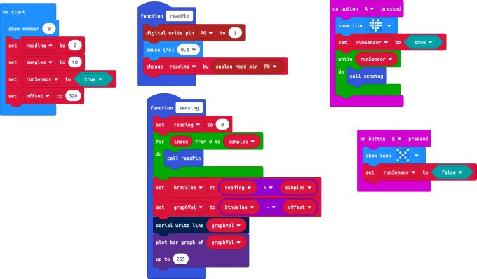
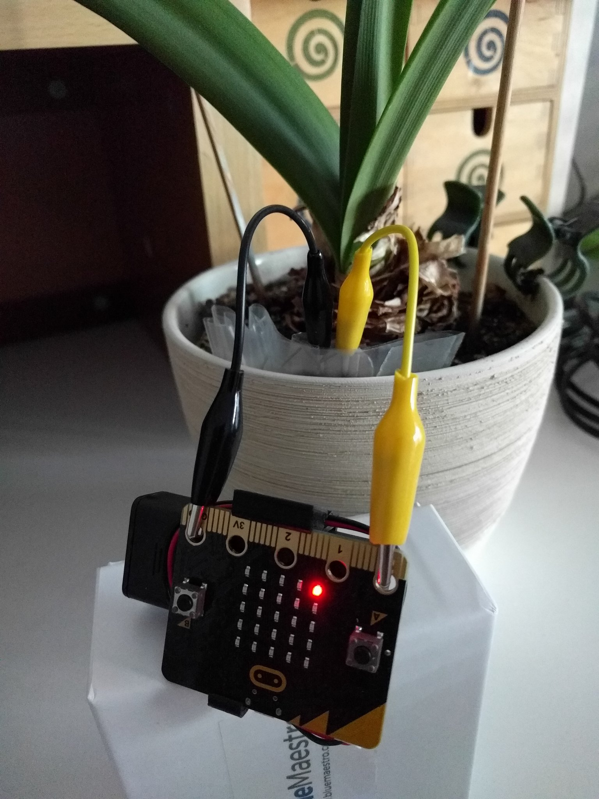

Liquid Level Sensing¶
There have been a number of posts on Twitter where people have used BBC micro:bits to measure water levels or soil moisture.
Normally these are done with resistive sensing which has a number of disadvantages such as corrosion of the sensor.
It seemed like this was a good opportunity to apply my capacitive sensing learning to a different application area.
If you want some background on how liquid level sensing works with capacitance then this video is very good:
To create the sensor, two strips of copper tape were stuck onto cardbaord and placed inside of a freezer bag. It is important to get the two strips parallel and close as possible without touching. The cardboard is placed in a “freezer bag” to stop them getting wet. One of the copper strips is connected to ping GND and the other goes to pin 0
Here is a video of the initial experiment I did with this:
Using the following code:
This can also be used to measure the change in moisture in a plant pot. Although maybe the sensor needs to be redesigned a bit to fit into the ground better.
